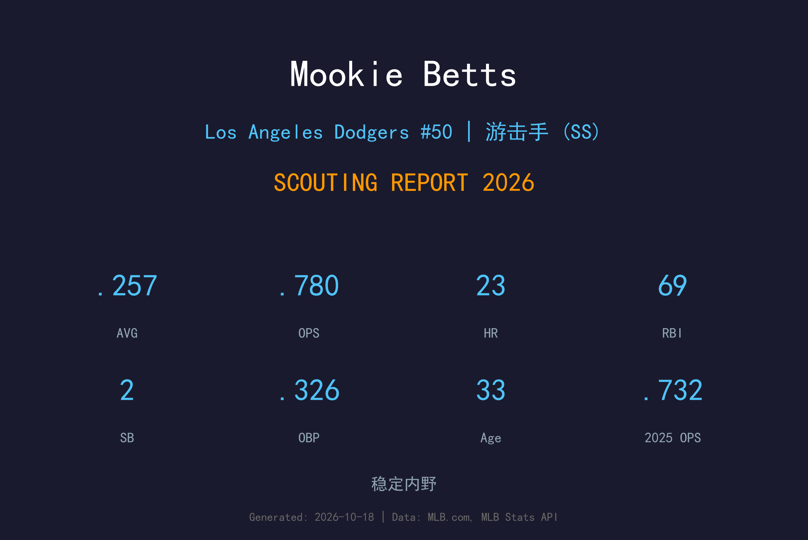
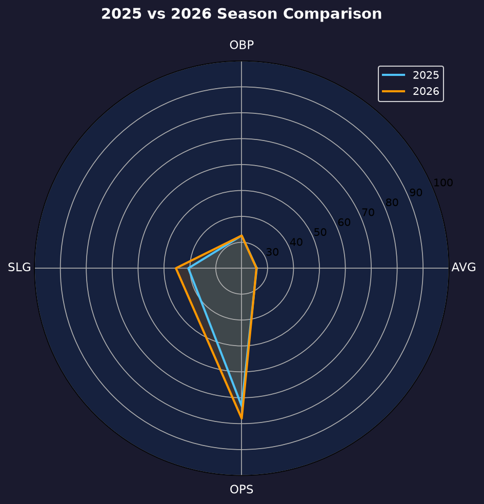
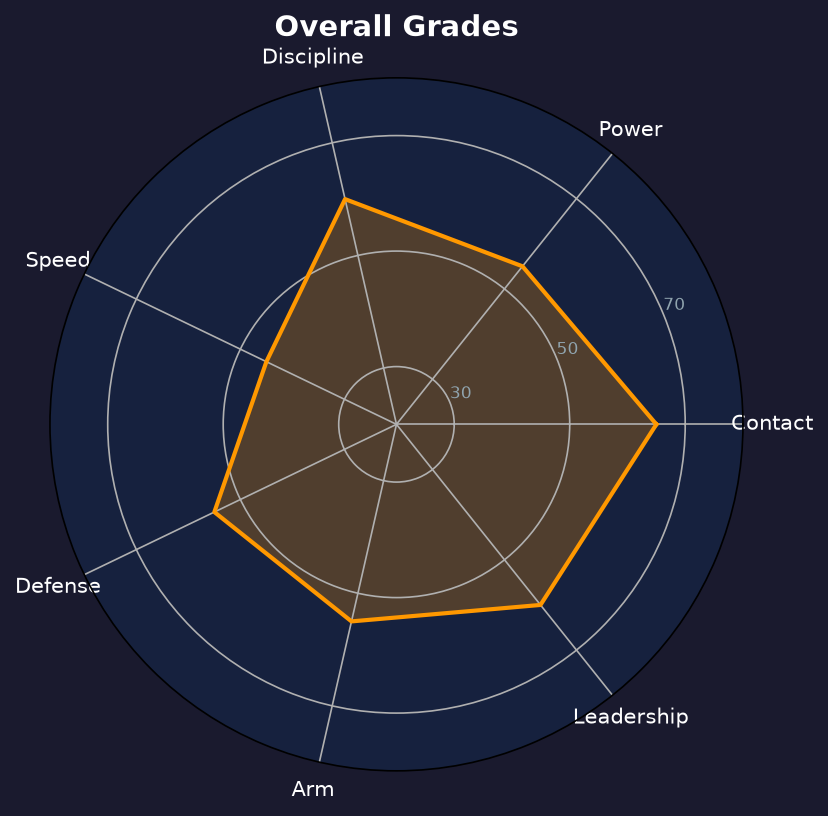

Los Angeles Dodgers #50 | 游击手 / 外野 | 右打 | 全能战士

Mookie Betts 是当今大联盟最全面的球员之一，2018年美联MVP得主，以精英级打击、顶级守备与超高棒球智商著称。
2026年他出赛123场，缴出.257/.326/.454、OPS .780，23轰69打点。长打率从2025年的.406回升至.454，全垒打数创2023年以来新高，证明转型游击手后的打力并未流失。他整季仅58次三振（三振率11.0%），是道奇主力打者中 contact 能力最稳定的。
33岁的 Betts 已不再是那个30-30的跑垒威胁（本季仅2盗），但他用选球、守备位置价值与领导能力继续统治比赛。他是道奇内野的定海神针，也是年轻球员的职业标杆。
.346/.438/.640、32轰30盗的史诗赛季，MVP票选压倒性胜出，同年夺世界大赛冠军。
季中被交易至洛杉矶道奇，当季即随队夺得世界大赛冠军，开启道奇王朝时代。
生涯最佳攻击赛季之一，39轰创下当时个人纪录，确立道奇头牌地位。
作为核心成员连续两年夺冠，2024年起正式转任游击手。

| 赛季 | G | AVG | OBP | SLG | OPS | HR | RBI | BB | SO |
|---|---|---|---|---|---|---|---|---|---|
| 2025 | 150 | .258 | .326 | .406 | .732 | 20 | 82 | 61 | 68 |
| 2026 | 123 | .257 | .326 | .454 | .780 | 23 | 69 | 47 | 58 |
2026 出赛数因伤势与轮休减少27场，但 SLG/OPS 双双回升，单位产出效率反而提升——打点率（RBI/打席）从.131微降至.130，但长打产出显著回温。
Betts 的挥棒紧凑、出手快，擅长把球推到右外野间隙。2026年他的击球仰角与拉打比例明显回升，长打率从.406弹升至.454，23轰是2023年以来最多。他的力量不是靠体格，而是靠 timing 与核心爆发力。
整季仅58次三振（三振率11.0%），是道奇主力阵容中最低；47次保送对58次三振，BB/SO 比0.81相当健康。OBP-AVG差距.069，说明上垒贡献稳定。唯一的瑕疵是14次双杀打偏高，与滚地球比例上升有关。
2024年转任游击手后，守备稳定性逐年进步。他的步法与传球的准确性在内野手中属于中上，超强棒球智商让他总能预判击球员与跑者的下一步。速度虽从巅峰期下滑，但守备范围仍高于联盟平均。
123场出赛是近五年最低，主要因伤势与球队保护性轮休。但他把每一场的效率都拉满：.780 OPS、23轰、69打点，打点率（每打席.131）优于2025年。这是典型的"减量保质"赛季——Betts 正在从铁人型球星转型为高精度老将核心。

减量保质的全能核心，contact 与智商仍属联盟顶级
B+ 级 / 明星级内野手
道奇 2026 季后赛战绩：NLDS 3-1 晋级、NLCS 0-4 止步。
| G | PA | AVG | OBP | SLG | OPS | HR | RBI | BB | SO |
|---|---|---|---|---|---|---|---|---|---|
| 8 | 35 | .207 | .343 | .207 | .550 | 0 | 0 | 6 | 4 |
Mookie Betts 将在2027赛季年满34岁。他的 contract 与地位决定了道奇仍会以他为内野核心，但角色将逐渐从"全能球星"转向"高精度老将"。健康管理会是未来两季的关键词——2026年123场的出赛数说明球队已经开始有意识地保护他。
2026：123场、.257/.326/.454、23轰69打点——减量保质，SLG 回升
2027：目标维持OPS .750+，出赛数可能进一步压缩至110-115场
2028+：守备位置可能回移外野或二垒，以延长生涯巅峰尾巴
Mookie Betts 出生于田纳西州纳什维尔，高中时期就是篮球与棒球双栖明星。2011年，他在选秀第五轮被波士顿红袜选中，2014年登上大联盟，并迅速成长为联盟最全能的球员。
在波士顿，他赢下了2018年美联MVP与世界大赛冠军。2020年，他被交易至洛杉矶道奇，当赛季就帮助球队夺得世界大赛冠军，并在2024、2025年随队完成二连霸。
2024年起，Betts 正式从外野转任游击手——这一在33岁高龄仍愿意接受新挑战的决定，展现了他对比赛的热爱与 versatility。他同时以职业态度著称，是联盟中最受尊敬的球员之一。场外的 Betts 热爱保龄球，曾多次参加职业保龄球赛事。